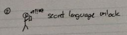
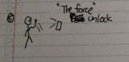
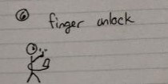
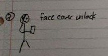
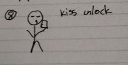

INITIAL SKETCHES
Click on each image to read the description!










Our primary goal for this project was to design and implement an animated sensor-based interface for a mobile phone that provides an alternative way to unlock a mobile phone equipped with a multiple sensors. In pursuit of this objective, we designed a more secure and engaging mobile phone unlocking mechanism that goes beyond the conventional 'slide to unlock' method. Combining sensor-based inputs with an animated feedback system, the Little Hungry Man Interface offers users a captivating and secure method to unlock their mobile devices. This interface ensures that only when the little hungry man eats the fruits in the preset order can the user unlock the device, thereby enhancing user security and engagement.
The unlocking interface introduces an innovative and engaging unlocking method that leverages sensor-based interaction for an enhanced user experience. Upon initiating the unlocking process, the user is directed to a screen adorned with a friendly face emoji positioned amidst various food emojis scattered randomly across the display. The unlocking mechanism employs the device's accelerometer and gyroscope sensors, enabling users to navigate the face emoji to consume the food emojis in a specific order by tilting the phone accordingly. Once the correct sequence of food consumption is accomplished, the interface transitions to a congratulatory screen, signifying successful unlocking and completion of the process.
Key Functionality and Implementation:
1. Sensor-Based Navigation: By utilizing the device's accelerometer and gyroscope sensors, the interface enables users to manipulate the position of the face emoji on the screen through intuitive tilting gestures. This sensor-based navigation system facilitates a hands-free unlocking process, providing users with a convenient and interactive method to interact with the interface.
2. Animated Feedback System: Throughout the unlocking process, the interface employs dynamic animations to provide users with real-time feedback on their actions. As users tilt the device to guide the face emoji towards the designated food emojis, the interface responds with visual cues, such as responsive movements of the emojis and dynamic transitions, indicating the recognition of the user's tilting gestures.
Through its integration of sensor-based navigation, interactive animations, and robust accidental activation prevention measures, the unlocking interface presents a dynamic and engaging alternative to the conventional 'slide to unlock' method. This innovative approach not only enhances user interactivity and device security but also showcases the potential of sensor-based interactions in creating a more intuitive and enjoyable user experience.
Each team member was asked to sketch out 10 ideas that they believe could be suitable for an innovative and novel interface. We then discussed each idea thoroughly and brainstormed new features that could be added to the original idea. At the end, we decided that “Little Hungry Man” is the idea that best suits the project’s rubric and has the most prospects for success while being implementable given the short timeline.
After agreeing that the “Little Hungry Man” idea had the most prospect for innovation and success, each team member created 10 refined sketches that matched their vision of the interface. We then discussed all the designs, and decided on the interface layout and the feasible features that could be implemented given our short timeline.
Our creative unlock uses a gyroscope for a method of unlocking a phone. While that is a creative method on its own, integrating gameplay into our unlock method makes our unlock fun as well as functional.
Our team's success in this project was the result of a coordinated effort, with each member playing a crucial role. When it came to sketching out our initial ideas, each team member prepared their own ideas, then we brainstormed, refined, and collaborated to bring our creative visions to life. Simon and Katie implemented the interface logic. Nayera’s writing skills allowed the team to present informative write-ups that effectively communicated the essence of our project. For the demo, Simon brought the unlocking interface to life with his enthusiasm. Together, we combined our strengths and talents to deliver an innovative and engaging application in a short period of time.